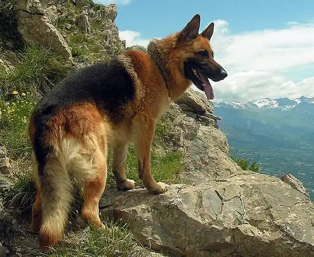
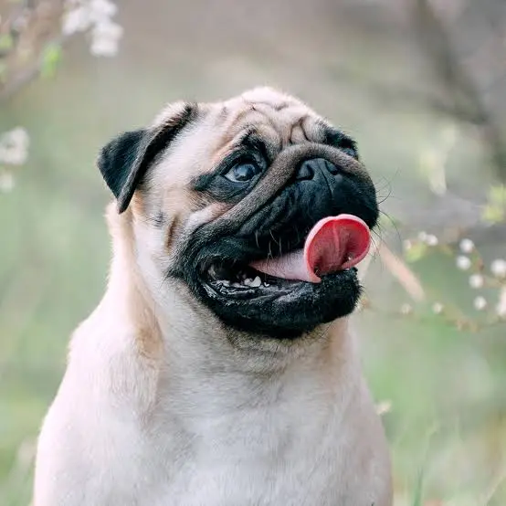
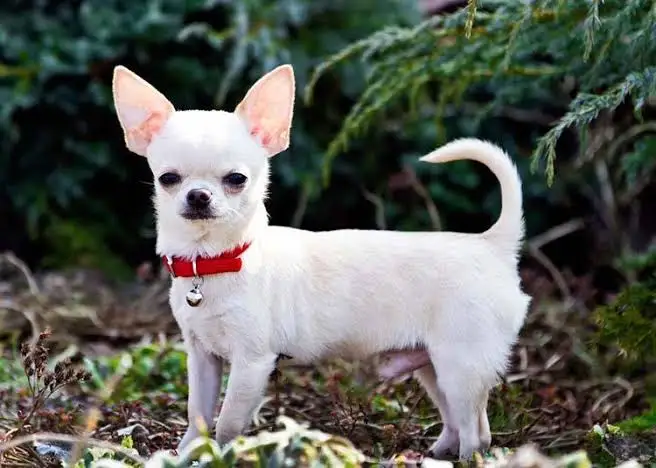
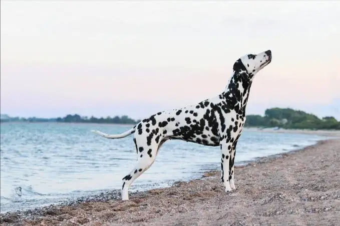
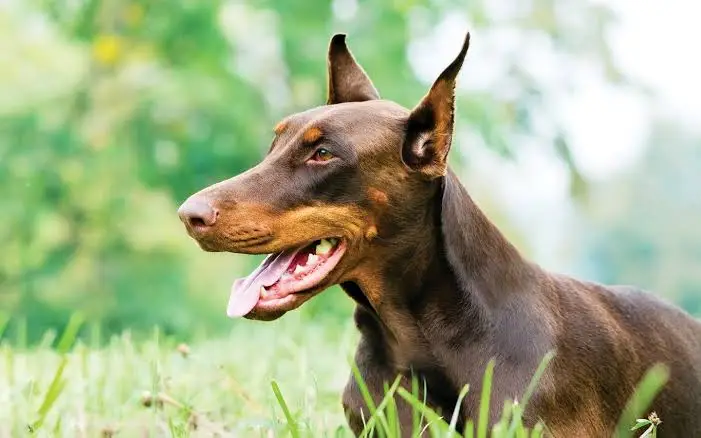

Mascotas
Perro Beagle
El Beagle es una raza de perro sabueso de tamaño mediano.

Golden Retriever
Perro amigable, inteligente y muy familiar.
Bulldog
Fuerte, tranquilo y excelente mascota doméstica.

Pastor Alemán
Muy inteligente y protector.

Pug
Pequeño, divertido y muy cariñoso.
Poodle
Extremadamente inteligente y activo. Además, pierde poco pelo.

Chihuahua
Pequeño pero valiente. Muy apegado a su dueño y con mucha personalidad.

Dálmata
Activo y elegante. Reconocido por sus manchas únicas y mucha energía.

Doberman
Ágil, inteligente y muy protector. Excelente como perro guardián.